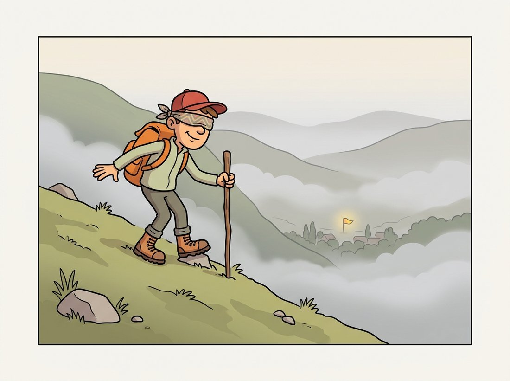

"I never see the whole landscape. I only feel the slope under my feet and take one careful step downhill. A few million steps later, people call it intelligence."
A Stochastic Gradient, Stepping Blindly Downhill
Training a network is two ideas glued together: backpropagation, which is the chain rule applied mechanically to a computation graph to get the gradient of the loss with respect to every parameter, and gradient descent, which uses that gradient to nudge each parameter a little downhill. This section derives both on a tiny network you can follow by hand, then surveys the optimizer family (SGD, momentum, Adam) and the learning-rate schedules that decide whether training converges to a good solution or thrashes.
In Section 18.1 we set the XOR network's weights by hand. That does not scale past four data points and two hidden units. We need a procedure that, given a measure of how wrong the network is, automatically computes which direction to move each of its (possibly billions of) parameters to make it less wrong. That procedure is backpropagation feeding gradient descent. Both are simpler than their reputation, and understanding them once means that for the rest of Part III you can call loss.backward() and optimizer.step() knowing exactly what they do.
1. The Loss Function: A Scalar to Descend Beginner
Optimization needs a single number to minimize. For classification that number is the cross-entropy loss, which measures the distance between the predicted probability distribution $\mathbf{p}$ and the true class. If the true class is $y$, the loss for one example is the negative log-probability the model assigned to the correct answer:
$$ \mathcal{L} = -\log p_y = -\log \frac{e^{z_y}}{\sum_k e^{z_k}}. $$
A confident correct prediction ($p_y \to 1$) gives loss near zero; a confident wrong prediction ($p_y \to 0$) gives a large loss. The full objective averages this over a batch. The gradient of cross-entropy with respect to the logits has a famously clean form: $\partial \mathcal{L} / \partial z_c = p_c - \mathbb{1}[c = y]$, the predicted probability minus the one-hot truth. Read intuitively, this is just "prediction minus target". Each logit is pushed down in proportion to how much probability the model wrongly placed on that class, and the true class is additionally pulled up. A perfect prediction yields a zero gradient and no further change. This simplicity is why softmax and cross-entropy are always paired. The regression analogue is the mean squared error (MSE), the average of the squared differences between prediction and target, $\frac{1}{n}\sum_i (\hat{y}_i - y_i)^2$; it plays the same role for continuous targets and is the same fidelity measure that underlies the PSNR image-quality metric of Chapter 1.
2. The Computation Graph Beginner
A network's forward pass is a sequence of elementary operations: multiply, add, apply ReLU, take softmax, compute the log. We can draw this as a directed graph whose nodes are operations and whose edges carry values forward. Backpropagation walks this graph in reverse, and to do so it needs each node to know its local derivative, how its output changes when its input changes. Figure 18.2.1 shows the graph for a two-layer MLP and the two passes that flow through it.
3. Backpropagation Is the Chain Rule Intermediate
The chain rule says that if $\mathcal{L}$ depends on $a$ which depends on $w$, then $\partial \mathcal{L}/\partial w = (\partial \mathcal{L}/\partial a)(\partial a/\partial w)$. Backpropagation applies this rule node by node, in reverse topological order, reusing the gradient computed for downstream nodes (the upstream gradient) so no derivative is recomputed. For a linear node $\mathbf{a} = W\mathbf{x}$ with upstream gradient $\mathbf{g} = \partial \mathcal{L}/\partial \mathbf{a}$, the local rules are
$$ \frac{\partial \mathcal{L}}{\partial W} = \mathbf{g}\,\mathbf{x}^\top, \qquad \frac{\partial \mathcal{L}}{\partial \mathbf{x}} = W^\top \mathbf{g}, $$
and for a ReLU node the local derivative is the mask "1 where the input was positive, 0 elsewhere". The code below implements the full forward and backward pass of the one-hidden-layer MLP from Section 18.1 in NumPy, with no autograd, to make every gradient explicit.
# Full forward AND backward pass of a one-hidden-layer MLP in pure NumPy, no
# autograd: the forward computes the cross-entropy loss, and the six backward
# lines apply the chain rule to produce gradients for every weight and bias.
import numpy as np
rng = np.random.default_rng(3)
batch, d, H, C = 16, 20, 32, 4
X = rng.standard_normal((batch, d))
y = rng.integers(0, C, size=batch)
W1 = rng.standard_normal((H, d)) * np.sqrt(2.0 / d); b1 = np.zeros(H)
W2 = rng.standard_normal((C, H)) * np.sqrt(2.0 / H); b2 = np.zeros(C)
# ---- forward ----
z1 = X @ W1.T + b1 # pre-activation, (batch, H)
a1 = np.maximum(0.0, z1) # ReLU activation
z2 = a1 @ W2.T + b2 # logits, (batch, C)
z2 -= z2.max(1, keepdims=True)
p = np.exp(z2); p /= p.sum(1, keepdims=True)
loss = -np.log(p[np.arange(batch), y] + 1e-12).mean()
# ---- backward ----
dz2 = p.copy(); dz2[np.arange(batch), y] -= 1; dz2 /= batch # softmax+CE gradient
dW2 = dz2.T @ a1; db2 = dz2.sum(0)
da1 = dz2 @ W2
dz1 = da1 * (z1 > 0) # ReLU local derivative
dW1 = dz1.T @ X; db1 = dz1.sum(0)
print(round(loss, 4), dW1.shape, dW2.shape) # e.g. 1.5231 (32, 20) (4, 32)dz2 = p - onehot seeds the chain, then the linear rules (dW2 = dz2.T @ a1) and the ReLU mask (z1 > 0) propagate it back. Note that z1 and a1 from the forward pass are reused in the backward, which is why training stores activations.Those six backward lines are the entire learning machinery, and a key practical point is hidden in them: the backward pass needs the forward activations ($a_1$, the ReLU mask). This is why training a network costs roughly twice the memory of running it: the intermediate activations must be stored for the backward pass. Chapter 21 returns to this when memory becomes the binding constraint.
Backpropagation is reverse-mode automatic differentiation. Its decisive property is that one backward traversal computes the gradient with respect to all parameters at once, at a cost comparable to a single forward pass, regardless of how many millions of parameters there are. The naive alternative, perturbing each parameter and remeasuring the loss (finite differences), would require one forward pass per parameter, making training a large network astronomically expensive. The whole field is practical only because the gradient is this cheap.
Students often treat backpropagation as the thing that trains the network, and picture it as "errors flowing backward to fix the weights". In fact backpropagation does not change a single weight: it only computes the gradient $\nabla_\theta \mathcal{L}$, the direction in which each parameter would increase the loss. Nothing is updated until a separate step, the optimizer's update rule (subsection 4), consumes that gradient and nudges the weights. The clean division of labor is worth fixing in your mental model: backpropagation is gradient computation (one mechanical chain-rule pass, the same in every framework), and gradient descent is gradient consumption (a choice among SGD, momentum, Adam, and the schedules of subsection 6). This is exactly why the section ends by calling the chain rule "settled physics" while optimizers remain open research: swapping the optimizer changes how you use the gradient, never how it is computed. When a network fails to learn, ask which half is at fault, a wrong gradient (a backprop or graph bug) or a badly consumed one (a bad learning rate or optimizer).
4. Gradient Descent and Its Stochastic Cousin Beginner
With the gradient $\nabla_\theta \mathcal{L}$ in hand, the update rule is to step opposite the gradient by a learning rate $\eta$:
$$ \theta \leftarrow \theta - \eta \, \nabla_\theta \mathcal{L}. $$
Computing the gradient over the entire dataset (batch gradient descent) is accurate but expensive and rarely worth it. Stochastic gradient descent (SGD) instead estimates the gradient from a small random mini-batch of examples, trading a noisier gradient for vastly more updates per unit of compute. The noise is not purely a nuisance: it helps the optimizer escape sharp, poorly generalizing minima and saddle points. The learning rate $\eta$ is the single most consequential hyperparameter in all of deep learning: too large and the loss diverges, too small and training crawls or stalls in the first bad valley it finds. Figure 18.2.2 illustrates the three regimes on a one-dimensional loss.
The three regimes in Figure 18.2.2 stop being abstract the moment you make them happen yourself. Take the from-scratch MLP and the momentum-SGD update from this section, wrap the five-step pass in a loop over a few hundred steps, and append loss to a list each step. Now rerun the same loop several times changing only one number, the learning rate lr, across roughly [1e-4, 1e-3, 1e-2, 1e-1, 1.0], and plot all the loss curves on one axis (a log scale on the y-axis makes the differences readable). What to observe: the smallest rate barely dents the loss in the step budget (the "too small" regime), a middle value drops it fastest and flattens out (the "just right" valley), and the largest rate either stalls or sends the loss climbing to inf/NaN within a handful of steps (the "too large" overshoot). The sweet spot is usually one notch below the largest rate that has not yet diverged, a heuristic you will reuse in every later chapter. It needs nothing beyond the NumPy code already on this page plus Matplotlib, and the same sweep is the backbone of Exercise 18.2.3.
Gradient descent is the most successful blindfolded hiker in history. It cannot see the valley, the summit, or even its own feet; it only feels the slope right where it stands and shuffles one step downhill. Set its stride (the learning rate) too long and it pole-vaults clean over the valley and lands on the far ridge; too short and it will still be inching downhill when your cloud bill arrives. The learning rate is the length of the blindfolded step, and getting it wrong is the single most popular way to turn a GPU into a space heater. The illustration below makes the blindfolded-hiker picture literal.

5. Momentum, Adam, and the Optimizer Family Intermediate
Plain SGD struggles in ravines, valleys that are steep in one direction and shallow in another, where it zig-zags. Momentum fixes this by accumulating a velocity, an exponentially decayed running average of past gradients, and stepping along it: $\mathbf{v} \leftarrow \mu\mathbf{v} - \eta\nabla\mathcal{L}$, then $\theta \leftarrow \theta + \mathbf{v}$. The velocity damps oscillation across the ravine and builds speed along its floor. Adam goes further, keeping per-parameter running averages of both the gradient (first moment $\mathbf{m}$) and its square (second moment $\mathbf{u}$), and scaling each parameter's step by the inverse square root of its second moment:
$$ \mathbf{m} \leftarrow \beta_1 \mathbf{m} + (1-\beta_1)\mathbf{g}, \quad \mathbf{u} \leftarrow \beta_2 \mathbf{u} + (1-\beta_2)\mathbf{g}^2, \quad \theta \leftarrow \theta - \eta\,\frac{\hat{\mathbf{m}}}{\sqrt{\hat{\mathbf{u}}}+\epsilon}, $$
where $\hat{\mathbf{m}}, \hat{\mathbf{u}}$ are bias-corrected versions. The per-parameter scaling means rarely-updated parameters get larger effective steps. That forgives a badly tuned base learning rate, which is why Adam is the default first choice in 2026. Its modern variant, AdamW, decouples weight decay (L2 regularization) from the adaptive step, fixing a subtle interaction that hurt generalization; this is the optimizer the training loop in Section 18.5 reaches for. We build up to that scaling in two steps: first the snippet below implements momentum SGD in a few lines to show there is no mystery in optimizer.step(), then the worked case after it traces how a common and a rare feature move under SGD versus Adam, making the forgiveness concrete.
# Momentum SGD from scratch: each parameter gets a velocity buffer that
# accumulates a decayed running average of its gradients, and the update steps
# along that velocity. This is exactly what optimizer.step() does internally.
import numpy as np
class MomentumSGD:
def __init__(self, params, lr=0.05, mu=0.9):
self.lr, self.mu = lr, mu
self.vel = [np.zeros_like(p) for p in params] # one velocity per param tensor
def step(self, params, grads):
for i, (p, g) in enumerate(zip(params, grads)):
self.vel[i] = self.mu * self.vel[i] - self.lr * g # accumulate velocity
p += self.vel[i] # step along it (in place)
# usage sketch with the gradients from subsection 3:
opt = MomentumSGD([W1, b1, W2, b2], lr=0.05, mu=0.9)
opt.step([W1, b1, W2, b2], [dW1, db1, dW2, db2])
print("one optimizer step applied")step method updates each per-parameter velocity buffer with self.mu * vel - self.lr * g and then moves the parameter along it in place, reusing the dW1, db1, dW2, db2 gradients from Code Fragment 1. This is exactly what PyTorch's torch.optim.SGD(momentum=0.9) does internally.The phrase "per-parameter scaling" sounds bureaucratic until you watch two weights move under the same global $\eta$. Picture a vision MLP where one weight reacts to a feature in nearly every image, so its gradient is consistently around $1.0$; a second weight reacts only to a rare object that appears in one image per thousand, so its gradient is around $0.001$ when present and $0$ otherwise. Under plain SGD with $\eta = 0.01$, the busy weight moves by $0.01$ per step and the rare-feature weight crawls by about $0.00001$: a thousand-to-one disparity, so the rare feature is effectively never learned unless you crank $\eta$ so high the busy weight diverges. Adam divides each step by $\sqrt{\hat{\mathbf{u}}}$, the running root-mean-square of that parameter's own gradient. The busy weight is divided by roughly $1.0$ and the rare weight by roughly $0.001$, so both take a step of size about $\eta$ regardless of gradient magnitude. The same $\eta$ that barely moved the rare weight under SGD now moves it as fast as the common one. That self-normalization, not the momentum, is why Adam trains usefully across a wide band of learning rates while SGD demands you hit the rate exactly.
The momentum class above, and the considerably fiddlier Adam with its bias correction and decoupled weight decay, collapse to one line in PyTorch: optimizer = torch.optim.AdamW(model.parameters(), lr=3e-4, weight_decay=0.01), then optimizer.step() after each loss.backward(). That replaces roughly 20 lines of careful buffer management per optimizer with a single constructor, and the library handles per-parameter state, bias correction, the numerical $\epsilon$, and gradient zeroing (optimizer.zero_grad()). It also exposes a whole catalog (SGD, RMSprop, Adagrad, Lion) behind the same API, so swapping optimizers is a one-word change.
6. Learning-Rate Schedules Intermediate
A fixed learning rate is rarely optimal across a whole training run: you want large steps early to make fast progress and small steps late to settle precisely into a minimum. A schedule varies $\eta$ over time. The two dominant modern choices are cosine annealing, which smoothly decays $\eta$ from its peak to near zero following a half-cosine curve, and linear warmup then decay, which ramps $\eta$ up from zero over the first few hundred steps (so the unstable early updates do not blow up) before decaying. Warmup is now standard for training transformers (Chapter 22) and most large models. The schedule interacts with the optimizer: AdamW with cosine decay and a short warmup is the recipe behind a large share of published vision results, and Chapter 21 treats schedule choice as a first-class part of the training recipe.
Who: A solo engineer fine-tuning an image classifier for a defect-detection line at a small electronics manufacturer.
Situation: Training was stable for weeks, then a "harmless" change, bumping the batch size from 64 to 512 to use a newly rented GPU, made the loss explode to NaN within the first handful of steps, every time.
Problem: Larger batches give a lower-variance gradient estimate, so each step is "trusted" more; with the learning rate unchanged, the same nominal $\eta$ now produced effectively larger, more confident steps that overshot immediately, the too-large regime of Figure 18.2.2. The textbook linear scaling rule says the learning rate should grow roughly with batch size.
Decision: The engineer added a 500-step linear warmup and scaled the peak learning rate up by the same factor as the batch size, then let a cosine schedule decay it. Both changes were two lines using torch.optim.lr_scheduler.
Result: Training was stable at the larger batch, finished in a third of the wall-clock time, and reached the same validation accuracy. The warmup, in particular, killed the early-step explosions outright.
Lesson: The learning rate, the batch size, and the schedule are coupled, not independent knobs. When you change one, reconsider the others; a warmup is cheap insurance against the unstable opening steps that large batches and adaptive optimizers are most prone to.
Adam has been the default for nearly a decade, but the frontier is active. Lion (Chen et al., 2023) is a sign-based optimizer discovered by program search that matches AdamW with less memory by storing only one momentum buffer. Sophia (2024) approximates second-order curvature cheaply to accelerate large-model pretraining. Schedule-Free optimizers (Defazio et al., 2024) aim to remove the learning-rate schedule entirely by averaging iterates, simplifying the recipe the practical example above had to tune. And the muP and related parameterization work makes hyperparameters like the learning rate transferable across model sizes, so a rate tuned on a small model is correct for a large one. The chain rule of subsection 3 is settled physics; how best to consume the gradient it produces remains genuinely open research.
Derive by hand that for softmax-plus-cross-entropy with true class $y$, the gradient of the loss with respect to logit $z_c$ is $p_c - \mathbb{1}[c = y]$. Then explain why this clean result depends on softmax and cross-entropy being paired, and what would change if you applied cross-entropy to raw (un-normalized) logits or applied mean squared error to the softmax outputs instead.
Take the from-scratch MLP backward pass in subsection 3 and validate it with a numerical gradient check: for a few randomly chosen entries of W1, perturb the entry by a tiny $\epsilon = 10^{-5}$, recompute the loss, and compare the finite-difference estimate $(\mathcal{L}(\theta+\epsilon) - \mathcal{L}(\theta-\epsilon))/(2\epsilon)$ against your analytic dW1 entry. Report the relative error and confirm it is below $10^{-6}$. This is the standard sanity check every from-scratch autodiff implementation must pass.
On the from-scratch MLP and a small synthetic two-class dataset, train the same network three times with plain SGD, momentum SGD, and a hand-implemented Adam, using the same initialization and a fixed step budget. Plot the training loss against step for all three. Describe which converges fastest, which is most sensitive to the learning-rate value (sweep three values each), and connect your observations to the ravine and per-parameter-scaling arguments of subsection 5. Which optimizer would you default to for a new problem, and why?